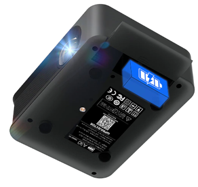

Cabe no seu bolso
Mini Projetor Smart WIFI
Aparência requintada, design moderno. Foi todo construido para uma experiência de usuário mais perfeita.
Comprar AgoraAparência requintada, design moderno. Foi todo construido para uma experiência de usuário mais perfeita.
Comprar AgoraApenas a30c pro está equipado com uma bateria Consiste em duas baterias de lítio 2500mah
